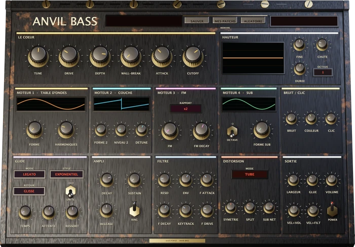

Basse pure
Moteur de basse monophonique
Un moteur de basse monophonique, sans détour : deux oscillateurs à forme continue du sinus au carré, un sous-oscillateur verrouillé, un son qui fait vibrer la pièce. Pas une boîte à rythmes : une basse.
Un moteur de basse monophonique, sans détour : la basse qui fait vibrer la pièce.
Basses 808, sub-basses de trap, basses slidées, basses de drill et de hip-hop.
| Type | Instrument (joue avec des notes MIDI) · Basses |
|---|---|
| Formats | Audio Unit (AU) et VST3 · macOS 10.15 ou plus récent · Apple Silicon et Intel |
| Entrées et sorties | Sortie stéréo |
| Latence | Aucune (0 échantillon) |
| MIDI | Reçoit les notes MIDI (clavier, séquenceur ou piste MIDI du logiciel) |
| Réglages | 50 réglages (plages, valeurs de départ et choix ci-dessous) |
| Licence | Démo complète 14 jours · clé à vie, valable sur tous vos Mac |
| Réglage | Plage | Au départ |
|---|---|---|
| POWER | non · oui | oui |
| OCTAVE | -2 à 2 | 0 |
| TUNE | -12 à 12 st | 0 st |
| FINE | -50 à 50 ct | 0 ct |
| FORME | 0 à 21 | 0 |
| HARMONIQUES | non · oui | non |
| FORME 2 | 0 à 21 | 2 |
| NIVEAU 2 | non · oui | non |
| DETUNE | -50 à 50 ct | 9 ct |
| FM | non · oui | non |
| RAPPORT | 0 à 9 | 3 |
| FM DECAY | 20 à 2000 ms | 300 ms |
| DEPTH | non · oui | non |
| SUB | non · oui | non |
| FORME SUB | non · oui | non |
| BRUIT | non · oui | non |
| COULEUR | non · oui | non |
| CLIC | non · oui | non |
| PROFONDEUR | 0 à 36 st | 7 st |
| DUREE | 3 à 400 ms | 45 ms |
| GLIDE | 0 à 2 | 1 |
| STYLE | 0 à 6 | 1 |
| TEMPS | 0 à 2000 ms | 120 ms |
| UNITE | non · oui | non |
| ATTENTE | 0 à 0,9 | 0,5 |
| RESSORT | non · oui | non |
| RETOUR | 0 à 2 | 0 |
| ATTACK | 0,1 à 400 ms | 1,5 ms |
| DECAY | 10 à 6000 ms | 900 ms |
| SUSTAIN | non · oui | non |
| RELEASE | 10 à 3000 ms | 160 ms |
| RING | non · oui | oui |
| CUTOFF | 20 à 20000 Hz | 2400 Hz |
| RESO | non · oui | non |
| ENV FILTRE | -1 à 1 | 0,25 |
| F ATTACK | 0,1 à 500 ms | 2 ms |
| F DECAY | 10 à 3000 ms | 300 ms |
| KEYTRACK | non · oui | non |
| F DRIVE | non · oui | non |
| DRIVE | non · oui | non |
| MODE | 0 à 3 | 0 |
| WALL-BREAK | non · oui | non |
| SYMETRIE | -1 à 1 | 0 |
| SPLIT | 60 à 300 Hz | 120 Hz |
| SUB PROPRE | non · oui | non |
| LARGEUR | non · oui | non |
| GLUE | non · oui | non |
| VOLUME | -24 à 12 dB | -5 dB |
| VEL > VOL | non · oui | non |
| VEL > FILTRE | non · oui | non |
Ce plug-in est dans
FORGE COMPLET · 14,90 €TTC
Voir les packsAudio Unit et VST3 · macOS · sans compte, sans connexion
Dans ces packs
FORGE COMPLET · 14,90 €Ouverture bientôt
Renseignez votre adresse e-mail pour être prévenu de l’ouverture de la boutique et du tarif de lancement. Aucun autre envoi.
Une seule notification, le jour de l’ouverture. Votre adresse n’est utilisée que pour cela (voir les mentions légales).